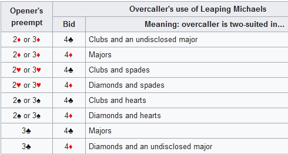

RU-SO
Innehåll:
Öppningsbud
Generellt
Öppning 1KL
Öppning 1RU
Svar på ÖHs reverse
Öppning 1HÖ
Support-dubbling/-redubblingar
Öppning 1NT
1NT/2NT => Smolen
Öppning 2KL
Öppning 2RU-Multi
Öppning 2HÖ
Spärrbud
Manco
Störd RKC
Good/Bad 2NT
Serious 3NT i competition
ROMEX inviter
Balansering 4e hand
Mot 1NT: DOIT / Nilsland
Mot 2RU-Multi
Mixed Raise
Michaels / Leaping Michaels
Lebensohl / Transfer-Lebensohl
Utspel / Markeringar
Kontrollfrågor
Öppningsbud
1X = 5541-öppningar med transfer-svar på 1KL.
1KL = Naturligt, 10-12 bal/singel-lå, el 16-18 bal.
1RU = Naturligt. 4+ru, alltid obal hand.
1NT = 13-15 bal.
2KL = A) 5+ru. 7-10hp. I 1a/2a hand förnekas 4hö.
B) 19-20 bal.
C) 25+ bal. UK.
D) UK obal.
2RU = A) 6+hö. 5-10hp. I 3e hand upp till ca 11,5hp. I 4e hand ca 10-12hp.
B) 21-22 bal.
2HÖ = 5+hö och 4+lå. 10-13 hp.
2NT = 23-24 bal.
Generellt
1RU/1HJ/1SP-1NT = Normalt okrav, men kan vara upp till 11hp.
2-över-1 = UK
4e färg = UK (undantag: 1KL-1RU-1SP-2RU = 4e färg, invit+)
XY-NT/XYZ efter 1KL-1RÖ-1HÖ, 1KL-1XX-1NT och efter 1RU-1HJ-1SP!
Romex inviter (1 steg = ngn singelton eller xx)
Vi kör transfersvar (X/XX/bud) i följande lägen på UD och tangentinkliv:
1RU/1HJ/1SP-(X)-? // XX och alla bud utan hopp (ej qbid) är transfers.
Transfer till 1NT visar viss styrka,
men lovar ej håll i opps färg.
1RU-(1HJ)-? // X och bud utan hopp (ej heller qbid)
1HJ-(1SP)-? är transfer enligt samma som ovan.
samt:
1KL-(X)-XX = 5+ruter.
Överbud och hoppande svar är inte transfer.
Efter stark 2KL-öppning får aldrig ÖH skippa förbi kontrollbud enbart pga att han har "minimum".
Samma sak om ÖH visat NT-intervall (10-12, 13-15 eller starkare).
Hopp till 4NT är KVANTITATIVT om inte trumf redan spikats.
Vi använder INTE "4NT fastställer senast bjudna färg som trumf".
Om partnern accepterar kvant-inviten, svara på essen enligt 0-1-2-3-4
varefter 5NT är SLUTBUD (2 Äss saknas).
Konventioner
Switch cuebids:
(1KL/1RU/1HJ)-1HÖ-(PASS)-2KL = "Cuebid" (oavsett öppningsfärgen), dvs 10+ och 3+stöd.
-2RU = Ca 10-12.
-2HÖ = Ca 6-9.
-2RU/2HJ (ÖH'S FÄRG) = Visar klöverfärg.
Ovanstående gäller endast när inklivet 1HÖ följs av (PASS).
Om inklivet följs av (neg-X) gäller:
(1KL/1RU/1HJ)-1HÖ-(X)-XX = "Cuebid", dvs 10+ och 3+stöd.
-ALLA FÄRGBUD (även ÖH's färg!) är naturliga.
Försvar mot stark-1KL:
(1KL*)-X = Båda hö.
-1RU/1HJ/1SP = Naturligt.
-1NT = Hårda eller mjuka färger.
-2KL/2RU/2HJ = Antingen bjuden färg, eller de 2 följande färgerna.
-2SP = Nat spärr.
-2NT = Lågfärgerna.
1KL-öppning
1KL - 1RU = 4+hj.
- 1HJ = 4+sp.
- 1SP = 6+hp utan hö. Eller UK med 4hö + längre ruter.
- 1NT = Nat invit 13-14 hp, ej hö.
- 2KL = UK, minst 5kl. 4hö kan finnas.
- 2RU/2HJ/2SP = 6-korts, 3-6.
1KL - 1RÖ - relä = 10-12 bal/singel-lå, ej 4-stöd. Eller kl-hand m 3-stöd. => XY-NT
- 2NT = Avlägg i klöver, eller 5-5 UK.
- 3LÄ = 5-5 Invit.
1KL - 1RÖ - 1NT = 16-18 bal. => XY-NT
1KL - 1RÖ - 2HÖ = 4-stöd, minimum (bal el obal klöverhand).
- 2RU = A) Nat reverse. B) 4-stöd med obal klöverhand, ca 14+.
- 2HÖ = Avslag till B-handen.
- 2AHÖ = Accept till B-handen och UK.
- Med B-handen bjuder ÖH högfärgen på lägsta nivå, krav.
- Övriga bud = A-handen med kl+ru.
- 2NT = A) 16-18 bal, 4-stöd. B) UK med enfärgad klöver.
- 3KL = Minimum.
- 3RU = Tillägg + UK.
1KL - 1RU - 1SP - 2NT = Stenberg m 4+spader. UK.
Special: Efter 1KL-1RU-1SP kör vi inte XY, utan:
1KL-1RU-1SP-2KL = Nat svag pref till klöver.
-2RU = 4e färg, invit+. Ej UK.
-2NT = Stenberg 4+spader, UK.
1KL - 1SP - 1NT = 10-12 bal.
- 2NT = UK med enfärgad kl.
- 2RU = A) Nat reverse kl+ru. B) 16-18 bal.
- 2HJ = 8+. Minst invitstyrka.
- 2SP = 17-18 bal. Accept till inviten.
- 2NT = 16 bal. Okrav till inviten.
- 3KL = Reversehanden. Minst 4-5 i lå.
- 3RU = 6kl+5ru.
- 3HÖ = Primärt håll. Frågar efter håll i ahö.
- 2SP = Avslag med max 6hp.
- 2NT = 16-18 bal.
- 3XX = kl+ru-handen.
1KL - 2KL - 2RU = Min. Bal el obal.
- 2HÖ = 4hö.
- 2NT = 5kl. Ej 4hö.
- 3KL = 6+kl. Ej 4hö.
- 2HÖ = Tillägg. 4hö obal.
- 2NT = 16-18 bal.
- 3KL = Tillägg. 5+kl. Ej 4hö.
Störd 1KL:
1KL-(1RÖ) -X/1HJ/1SP/1NT = System-ON.
1KL-(inkliv)-2NY = Nat F1.
1KL-(1SP) -1NT = Naturligt, ca 8-13. (Ej sys-on)
1KL-(X)-XX = Transfer, 5+ru.
1KL-(X)-BUD = SYS-ON, samma som ostört.
Efter 1KL-(1SP) kör vi vanlig negativ-dubbling (4+hj) och 2X = Nat F1.
1KL-1RÖ-(X)-1HÖ = 3stöd i hö.
-PASS = 2stöd i hö.
Vi spelar "alltid XY" i störd 1KL-budgivning, alltså, om:
1. Över 1LÅ-öppning har SH visar 6+p genom 1-över-1 eller dubbling.
och:
2a) ÖH återbjuder 1NT, eller
2b) SH kan fortfarande bjuda 1NT på andra varvet.
I dessa lägen är SHs 2LÅ=XY (och 2NT relä till 3KL), annars inte.
Efter 1KL-(2KL) kör vi som 1NT-(2KL), dvs
X = Stayman
2RÖ = Transfer med 5+hö.
...etc...
Efter 1KL-(2RU/2HJ/2SP) samma som efter 1NT-(2RU/2HJ/2SP),
dvs färgbud på 2-läget naturligt okrav (ev svag invit), medan
högre bud = Transfer-Lebensohl. Transfer till opps' färg visar invit+ med 5+klöver.
SHs 2NT följt av 3NT visar utgångsstyrka utan håll och utan 4korts objuden hö.
1RU-öppning
1RU - 1HJ - 1SP = Naturligt. - 2NT = Stenberg UK.
- 1NT = 4+kl.
- 2KL = 6+ru.
- 2RU = 3-stöd i hj. Minimum.
- 2HJ = 4-stöd. Minimum.
- 2SP = Naturligt reverse.
- 2NT = Stenberg, hj-stöd, 17+. -3KL-3HÖ = okrav.
- 3KL = Krav med 5-5 i lå.
- 3RU = Krav(?) med 6+ru.
- 3HJ = 4-stöd, ca 15-16.
1RU - 1SP - 1NT = 4+kl.
- 2KL = A) 6+ru. B) 4hj+5ru, minimum.
- 2RU = 3-stöd i sp. Minimum.
- 2HJ = 4hj+5ru, reversestyrka.
- Högre = Som ovan.
Öppningshandens transferåterbud ovan används endast i helt ostörd budgivning.
1RU - 2KL = UK med 5+klöver. Kan finnas 4korts hö. (Med 3334 UK, bjud 1KL-1SP-1NT-2RU enl XY)
-2RU = Min.
- 2HÖ = 4hö + längre kl.
- 2NT = 5+kl utan 4hö.
- 3KL = 6+kl utan 4hö.
-2HJ = Tillägg. 4hj. 1444, 4441, eller 5+ru.
- 2SP = 4e färg.
- 2NT = 5kl. Sp-håll.
- 3KL = 6+kl.
- 3HJ = 4hj.
-2SP = Tillägg. 4sp. 4144 el 5+ru.
-2NT = Tillägg. Enfärgad ru. 2-3 kl.
-3KL = Tillägg. 4+kl. 5+ru.
-3RU = Tillägg. Enfärgad ru. Kort kl.
-3HÖ = 5hö + 6ru.
1RU - 2SP = Spärr med 6+sp, ca 5-8.
1RU - 2NT = Nat invit utan hö, ca 11hp.
1RU - trumfhöjningar:
1RU - 2RU = 4+stöd utan hö, ca 8-11(12 usla), okrav.
- 3RU = Ej inviterande.
1RU - 3RU = 4+stöd utan hö, max 7hp.
1RU - 2HJ = UK med 4+ru-stöd, ingen 4korts hö.
Sedan 2SP/2NT(hj-håll)/3KL obligatoriskt hållvisande från båda händer,
dvs bjud håll nerifrån.
Störd 1RU:
Transfersvar efter UD och inkliv i tangentfärgen:
1RU - ( X ) - XX = Transfer, 4+hj.
- 1HJ = Transfer, 4+sp.
- 1SP = Förnekar 4+hö, "transfer till 1NT".
- 1NT = Transfer, 5+kl.
- 2KL = Transfer, 10+ med 4+stöd i ru.
- 2RU = Nat, max 9p.
1RU - (1HJ) - X = Transfer, 4+sp.
- 1SP = Ej 4+sp, "transfer till 1NT".
- 1NT = Transfer, 5+kl.
- 2KL = Transfer, 10+ med 4+stöd i ru.
Om ÖH bjuder transferfärgen på 1-läget, visar det exakt 3stöd.
Med 4stöd, bjud färgen på 2-läget.
Supportdubblingar visar 3stöd i SHs visade färg.
Efter störd 1RU (Dubbelt eller inkliv) gäller inte "omvända", utan:
1RU-(nånting)-2RU = 6-9. Vanligen 4stöd.
1RU-(nånting)-3RU = Max 6. Minst 4stöd.
1RU-(nånting)-3RU = Max 6. Minst 5stöd.
1RU-(inliv)-Qbid = 4stöd invit+.
1RU-(2KL)-X = Minst 4-3/3-4 i hö.
Svar på ÖHs reverse
Exempel:
1RU - 1SP
2HJ - 2SP = 5+sp. Rondkrav, men kan vara svagt.
- 2NT = 4sp. Svag hand.
- Högre = UK, beskrivande.
1RU - 1HJ
2SP - 2NT = Avslag, ev 4-stöd i sp. Alla andra bud = UK.
- 3RU/3SP = Krav.
- 4SP = Slutbud, ca 6-7p.
1HÖ-öppning
Trumfhöjningar:
1HÖ - 2HÖ = 3-stöd, 6-9.
- 2KL = A) Äkta UK B) Invit+ med 3-stöd.
- 2RU = Minimum.
- Övriga bud = UK.
- 3HÖ = 4-stöd, ca 3-6.
- 2NT = Stenberg-Skrot. UK, 4-stöd med 11+.
1HJ - 3KL/3RU = 4stöd med 7-8 resp 9-10.
1SP - 3RU/3HJ = 4stöd med 7-8 resp 9-10.
Bergen-varianterna ovan gäller även efter Dubbelt och inkliv 1SP, men ej efter högre inkliv.
Efter fi-inkliv på 1HÖ:
Q-bid = 3-stöd. Invit+.
2NT = 4-stöd. Invit+. (Dock, 1HJ-(2SP)-2NT = 3+stöd, invit+)
- 3KL(min) - 3HJ = Okrav.
1HJ - 3SP/4KL/4RU = Renons-splinter med max 3 kontroller.
1SP - 4KL/4RU/4HJ = Renons-splinter med max 3 kontroller.
1HJ - 2SP = Renons-splinter med 4+stöd och minst 4kontroller.
- 2NT = Relä.
- 3KL/3RU/3HJ = kl/ru/sp-renons.
1SP - 3KL = Renons-splinter med 4+stöd och minst 4kontroller.
- 3RU = Relä.
- 3HJ/3SP/3NT = kl/ru/hj-renons.
Övriga sekvenser:
1HJ-1SP-1NT-2HJ = invit, 3-stöd.
1HJ-1SP-1NT-3HJ = krav, 3-stöd.
1HÖ - 2KL = Nat UK, eller invit+ med exakt 3stöd i hö.
- 2RU = Alla minimi-händer. Övriga bud är UK:
- 2HÖ = 6+hö, tillägg.
- 2AHÖ = Naturligt, tillägg.
- 3NY = 5-5 tillägg.
- 2NT = Övriga med tillägg. Förnekar 6+hö, 5-4 i hö, eller 5-5.
1HÖ - 1NT - 2KL = Häxan. a) Alla 17+ b) 15-16 bal, eller 14goda-16 5hö+4kl.
- 2RU = Ca 8+hp. UK till 17+handen.
- 2HÖ = 14-16-hand.
- 2SP = 17+ med 3-stöd i sp.
- 2NT = 17+. Alla övriga 5-4 eller 5332-händer.
- 3NY = 17+. 5-5.
1HJ - 1SP - 1NT = 11-14, 5hö+332.
- 2KL = Häxan. Som ovan men minst 15+.
1HJ - 1SP - 2KL* - 2RU* - 2SP = 3stöd, 15+. Rondkrav.
- 2NT och 3SP = 8-9 okrav, med 4 resp 5 spader.
- Alla andra bud är UK.
1HÖ - 2RÖ - 2NT = 17+. Ej 6-korts hö, ej 5-5, ej 4-stöd.
1HÖ - 2RÖ - 3NY = 5-5. Hopp visar dessutom extrastyrka.
1HÖ - 2RÖ - 3NT = 17+. "Stenberg" med 4-stöd i svararens färg.
Störd 1HÖ:
Transfersvar efter UD och inkliv i tangentfärgen:
1HJ-(X)-XX = Transfer, 4+sp.
1SP-(X)-XX = Visar lite kort, "transfer till 1NT".
1HJ-(X)-1SP = Förnekar 4+sp, "transfer till 1NT".
1HÖ-(X)-1NT = Transfer, 5+kl.
1HÖ-(X)-2KL = Transfer, 5+ru.
1HJ-(X)-2RU = Transfer, 10+, hj-stöd.
1SP-(X)-2HJ = Transfer, 10+, sp-stöd.
1HÖ-(X)-2HÖ = Nat.
1HJ-(1SP)-X = Visar lite kort, "transfer till 1NT".
1HJ-(1SP)-1NT = Transfer, 5+kl.
etc.
Support-dubbling/-redubblingar
Gäller alltid när SH visar 4+hö,
och nästa moståndare Dubblar eller bjuder ett färgbud lägre än 2 i SHs färg,
dock inte när det mellankommande budet är 1NT.
1NT-öppning
Stayman, Transfers.
1NT - 2KL - 2HJ - 2SP = 4sp. Utgångskrav.
1NT - 2KL - 2HJ - 3SP = Hj-stöd. Slamintresse.
1NT - 2KL - 2SP - 3HJ = Sp-stöd. Slamintresse.
1NT - 2KL - 2XX - 4NT = Kvant-invit.
Med accept, svara 0-1-2-3-4, varpå 5NT = slutbud.
1NT - 2RU - 2HJ - 2SP = 5-5 i hö. Invit.
1NT - 2HJ - 2SP - 3HJ = 5-5 i hö. Krav.
1NT - 2RÖ - 2HÖ - Hopp i färg = Renons-splinter m 6+hö.
1NT - 2SP = A) Klöver. Avlägg/invit/UK. ... - 2NT = Accept på invit.
B) Ruter. Exakt invit.
- 3KL = Ruter. Avlägg/UK.
- 3RU = SLAMINVIT. 6+hj eller 5hj332.
- 3NT = Min. 2-korts hjärter.
- 3HJ = Max. 2-korts hjärter.
- NY = 3+stöd. Kontrollbud.
- 3HJ = SLAMINVIT. 6+sp eller 5sp332.
Efter 1NT - (2KL), är X = Stayman och SYS-ON.
Men efter högre inkliv:
X = Stayman/Negativt.
2HÖ = Naturligt okrav. ÖH går vidare med super-accept.
2NT = Transfer Lebensohl. Avlägg i lägre färg eller vissa UK.
3KL = Transfer Lebensohl. 5+ru. Invit+.
3RU = Transfer Lebensohl. 5+hj. Invit+.
Efter 1NT-2KL-(X) gäller:
- PASS = Förnekar kl-håll, oavsett högfärger.
SH kan bjuda 4hö (rondkrav+håll) eller fråga igen m XX.
- 2RU/2HÖ = Som utan dubbling, men lovar kl-håll
- XX = Slut-förslag.
Efter 1NT-2RÖ-(X) gäller:
- PASS = Förnekar håll i dubblade färgen.
SH kan upprepa sin transfer med XX.
- 2HÖ = Lovar håll.
- XX = Slut-förslag.
Efter 1NT-2KL-(2HJ) gäller:
- 2SP = 4sp + hj-håll.
- X = 4hj, ej 4sp. Typ KJxx el likn i hj, passbart.
- PASS= Övriga. Ej 4sp eller ej hj-håll. -X=förnyad Stayman.
Efter 1NT-2KL-(2SP) gäller:
- X = 4+hj.
- PASS = Ej hj.
Efter 1NT-(X) är XX krav till 2KL med avlägg i 5+lå.
Övriga bud samma som ostört, oavsett om X visar styrka el konv.
När SH har svag hand utan 5kortsfärg stannar vi normalt
i 1NT dubblat (inga andra slinkingar än XX).
1NT/2NT => Smolen
Vi kör Smolen på 3-läget:
1NT-2KL-2RU-3HÖ = 5ahö.
2NT-3KL-3RU-3HÖ = 5ahö.
Ingen Smolen på 2-läget.
2KL-öppning
2KL - 2RU = Max 14hp. Signoff till ru-handen.
- 2HJ = Kokish, UK. A) 25+ bal. B) 5+hj, UK.
- 2SP = relä.
- 2NT = 25+bal.
- Övriga = Naturligt med 5+hj.
- 2HÖ = 5+hö. Ca 15+hp.
- 2NT = Konv krav:
- 3KL = Minimum, 5-kortsfärg.
- 3RU = Minimum, 6-kortsfärg.
- 3HJ = Maximum, 5-kortsfärg.
- 3SP = Maximum, 6-kortsfärg.
- 3NT = AKQxxx.
- 4BUD = 19+. 4+färg. Krav till lillslam!
När svararen på 2KL kräver med 2HÖ redovisar öppnaren styrka och stöd i högfärgen:
- Höjning eller 2NT = 3-stöd, min/max.
- Närmsta färgbud = Singel el renons i SHs färg.
- Övriga färgbud = Exakt 2-stöd.
Alltså:
2KL - 2HJ - 2SP = 0 el 1 hj, oavsett styrka.
- 2NT = 3-stöd i hj, max.
- 3HJ = 3-stöd i hj, min.
- 3KL = 2stöd i hj. 5-korts ru. Odef styrka.
- 3RU = 2stöd i hj. 6-korts ru, min.
- 3SP = 2stöd i hj. 6-korts ru, max.
2KL - 2SP - 2NT = 3-stöd i sp, max.
- 3SP = 3-stöd i sp, max.
- 3KL = 0 el 1 sp, oavsett styrka.
- 3RU = 2stöd i sp, min. (efter 2KL-2SP kan vi ej skilja på 5 el 6 ru)
- 3HJ = 2stöd i sp, max.
Om svararen därefter återkommer med 3RU eller 3HÖ
är det invit+okrav (såvida inte öppnaren bjudit UK förstås).
Specialsekvenser:
2KL - 3HJ = Minst 5-5 i hö, invit.
2KL - 3SP = Minst 5-5 i hö, UK.
2RU-Multi
2RU visar
a) 6+hö, ca 7-12. Med 10 goda hp öppnar vi med 1HÖ, inte 2RU.
b) 21-22 bal.
2RU - 2HÖ/3HÖ/4HJ = Pass or correct.
Efter 2RU-2NT:
3KL = 9-12 oavsett vilken hö.
- 3RU = Utgångskrav. Frågar efter färgen => Visa korsvis!
- 3HJ = Invit och okrav om ÖH har hjärter (ÖH bjuder ut med sp-hand).
- 3SP = Invit och okrav om ÖH har spader. Men UK mot hj-hand.
3RU = 7-8, 6hj.
3HJ = 7-8, 6sp.
3SP = 7korts hj.
3NT = 7korts sp.
2RU - 2HJ = Inget utgång-intresse mot hj-hand.
2RU - 2SP = Inget utgång-intresse mot sp-hand, krav till 3HJ mot hj-hand.
- 2NT = 21-22 bal.
- 3KL = 6hj, max.
- 3RU = 6hj, min.
2RU - 2NT - 3KL = 6hö, 9-12p.
- 3RU = 6hj, 7-8p.
- 3HJ = 6sp, 7-8p.
- 3SP = 7hj.
- 3NT = 7sp.
- 4KL+ = 21-22 bal, 4+färg. Krav till slam.
2RU - 3KL/3RU = UK, SAT. SH har egen 5+hö, o kort i ahö.
Med 3+stöd i SHs färg återbjuder ÖH på 4-läget (4RU/4HJ blir transfers).
Efter 2RU-3RU bjuder man "naturligt" up-the-line:
2RU-3RU-3HJ = 6hj.
- 3SP = Kort hj. 6sp.
- 3NT = Kort hj. 5sp.
-3SP = 2sp. 5hj.
-3NT = Kort sp. 5hj.
Efter 2RU-3KL reläar ÖH först med 3RU (ger oftare spelför på SH), därefter "naturligt" up-the-line:
2RU-3KL-3RU-3HJ = 6hj.
- 3SP = Kort hj. 6sp.
- 3NT = Kort hj. 5sp.
-3SP = 2sp. 5hj.
-3NT = Kort sp. 5hj.
2RU - 4KL/4RU = SAT. Sh har egen lång högfärg.
Störd 2RU-Multi:
Om motståndarna på 2RU-Multi kliver in med 2/3/4 i HÖ, gäller:
X = Passa endast med färgen! Annars bjud!
2RU - (X) - PASS = Signoff i ÖHs färg (lovar ej ru!)
- 2HJ = Lovar spader-anpassning och tål minst 3-läget.
ÖH måste bjuda med spader-färg om opps bjuder på 3/4-läget.
Efter lågfärgsinkliv mot 2RU-Multi, samt alla inkliv på svaga-2HÖ gäller:
X = Straffdubbling.
Öppning 2HÖ
Visar minst 5+hö och 4+lå, 10-13. Även 6-4/5-5-händer.
2HÖ-3HÖ = Spärrhöjning, ej invit.
2HÖ-3KL = Pass-or-correct, dvs avlägg i öppnarens lågfärg.
2HÖ-2NT = Krav, och avlägg med egen lågfärg eller UK.
Ber ÖH bjuda sin KORTA lågfärg.
Detta för att SH ska kunna stanna i egen lång lågfärg.
Men om SH återkommer är det utg-krav:
-3LÅ-3AHÖ = UK med 5korts ahö.
-3LÅ-3HÖ = UK med 3-stöd, slaminvit.
2HJ-3RU = Utgångs-invit med 3+hj-stöd.
2SP-3RU = Relä till 3HJ:
a) Avlägg i hjärter. -3HJ-PASS
b) Utgångs-invit med 3+sp-stöd. -3HJ-3SP
c) Utgångsstyrka med 6 hjärter. -3HJ-3NT
2SP-3HJ = Invit med 6+hjärter.
2SP-2NT-3LÅ-3HJ = UK med 5korts hjärter.
2SP-2NT-3LÅ-3SP = Slaminvit med sp-stöd.
2HJ-2SP = Okrav med egen färg. ÖH kan höja med spader-anpis.
2HJ-3SP = UK med 6+spader.
2HJ-2NT-3LÅ-3SP = UK med 5korts spader.
2HJ-2NT-3LÅ-3HJ = Slaminvit med hj-stöd.
Störd 2HÖ:
2HÖ-(X)-XX = Ber ÖH bjuda sin lågfärg om nästa man passar.
2HÖ-(X)-2NT = Transfer till 5+kl.
2HÖ-(X)-3KL = Transfer till 5+ru.
2HÖ-(Inkliv)-X = Straffdubbling.
Spärrbud
Vi kör 2-3-4-regeln.
Ev 2,5-regeln när alla i zon :)
Manco
Om 4e färg eller hållfråga dubblas, gäller Manco:
- NT-bud = Dubbelhåll.
- PASS = Enkelhåll eller halvhåll -- varpå XX frågar efter enkelhåll.
- XX = Singel el renons i färgen.
- Övriga = Inget håll, minst xx i färgen.
Störd RKC
Om svaren på RKC dubblas, så är PASS fråga efter kontroll (1a eller 2a). Svararen redubblar med kontroll.
Om svaren 5C, 5D på RKC dubblas och det inte finns ngt tangentbud ledigt, så frågar XX efter trumfdamen.
Good/Bad 2NT
Efter öppningsbuden 1KL/1RU/1HJ, då motståndaren före öppnaren
på första varvet bjuder på 2-läget en högre färg än öppningsfärgen,
så kan ÖH med långfärg eller (om öppningen var 1RU/1HJ) 5-5-fördelning bjuda:
- 2NT = Max 13hp, eller 17+.
- 3 i öppningsfärgen eller lägre färg = 14-16hp.
Samma gäller oavsett om SH resp första motståndaren passat eller bjudit något.
Serious 3NT i competition
Om vi i störd budgivning
1. har fastställt högfärg som trumf, och
2. mellanhanden bjuder på 3-läget
så gäller:
- 3NT = "Serious", dvs slamintresse + kräver till eget kontrakt eller straffdubbling. Alla PASS blir alltså kravpass.
- Bud i opps' färg = Kontrollbud + slamintresse. Också krav till eget kontrakt eller straffdubbling.
- Ny färg = Inget slamintresse, men anpassningssökande om opps fortsätter bjuda. Ej krav till straffdubbling.
ROMEX inviter
Vi använder ROMEX-principer i ALLA lägen där man stöttar högfärg naturligt till 2-läget
(och mellanhanden sedan passar eller dubblar), t ex:
1HÖ-2HÖ ...
1RU-1HÖ-2HÖ ...
1KL-1RÖ-2HÖ ...
1RU-1HJ-1SP-2SP ...
1KL-1RU-1SP-2SP ...
1KL-(1RU)-X-(P)-2HJ ...
m.m, m.m....
Principen är att 1-steg alltid visar någon neg-invit,
medan 2+steg är positiv-invit (när högfärg är trumf).
Vid neg-invit gäller att man visar kort-färg "stegvis",
medan man med pos-invit visar färgen "äkta" eller
bjuder trumf/2NT för att visa den mest oekonomiska färgen/färgerna.
Exempel:
1SP-2SP-2NT = Ngn neg-invit.
-3KL-3RU = neg-KL.
-3HJ = neg-RU.
-3SP = neg-HJ.
1SP-2SP-3NY = Positiv i bjudna färgen.
1HJ-2HJ-2SP = Ngn neg-invit.
-2NT-3KL = neg-KL.
-3RU = neg-RU.
-3HJ = neg-SP.
1HJ-2HJ-2NT = Positiv i spader.
-3LÅ = Positiv i bjudna färgen.
Neg-invit kan göras med renons, singel eller xx.
Balansering 4e hand
I balanseringsläge, 4e hand:
(1X) - P - (P) - ?
är 1NT = 11-14 naturligt,
medan UD följt av NT-återbud = Ca 15-18-NT.
Med obalanserade händer kör vi principen att 4e hand adderar ~3hp till sin styrka,
medan partnern drar av 3hp från sin styrka,
varpå man i princip bjuder likadant som efter 2a-hands-inkliv.
Exempelvis, om man i balanseringsläget ovan har ett färginkliv med 15 hp,
måste man bjuda den som en överstark hand 18hp,
alltså normalt inleda med UD följt av färg-återbud.
Mot 1NT: DOIT / Nilsland
Mot normal 1NT (14+), "DOIT":
(1NT)-2LÅ = Minst 4sp+5lå.
(1NT)-2HÖ = Naturligt.
(1NT)- X = 4+hj: Antingen minst 4hj+5lå eller 4-5/5-4 i hö.
Utan 4korts hj, bjuder partnern normalt 2KL (pass-or-correct),
förutom med 1-3 i hö, då han bjuder 2HJ.
Efter (1NT)-X-2KL kan inklivaren därför
med 5-4/4-5 i hö bjuda sin 5korts hö, annars sin 5korts lå.
Mot svag-1NT (när opps 1NT kan vara 13hp el svagare) kör vi "Nilsland":
X = 15+hp.
2KL = Båda hö.
2RU = "Multi" med ngn högfärg, under öppningsstyrka.
2HÖ = Äkta, minst en hyfsad öppning.
Mot 2RU-Multi
Färginkliv naturliga.
Med hand lämplig för UD av endera högfärgen, Passa först och återkom med UD om lämpligt.
(2RU)-X = 14+balanserad handtyp, minst 3-3 i hö med håll i böra hö.
Med 17+ kan man återkomma med ny Dubbling.
(2RU)-Pass-(2HÖ)-X = UD av bjuden hö, indikerar alltså 4+ i motsatt hö.
Med längd i bjuden hö, kan man Passa och återkomma med UD av motsatt hö.
(2RU)-2NT = 14+hp, minst 5-4/4-5 i lå.
(2RU)-3SP = Minst 5-5 i lå (enl Leaping Michaels)
Mixed Raise
När vi gör naturligt färginkliv på 1-läget och partnern
hoppar till 3 i ÖH's färg, är det "Mixed Raise", dvs 4-stöd och ca 8-9p,
medan hopp till 3 i inklivsfärgen visar 4-stöd med svagare, max 7p.
Michaels / Leaping Michaels
(1LÅ) - 2LÅ = Båda hö.
(1HÖ) - 2HÖ = Andra hö + ngn lå.
(2HJ) - 3SP = Minst 5-5 i lå.
(2SP) - 3SP = Minst 5-5 i lå.
(2RU nat) - 3RU = Minst 5-5 i hö.
- 3HÖ = Minst 5-5 i hö + kl.
(2RU multi) - 3HÖ/4LÅ = Minst 5-5 i hö+lå, 4LÅ är starkare än 3HÖ.
I övrigt:

Efter (2RU)-4KL-(Pass el Dubbelt) är 4RU frågande med 4HÖ visar egen långfärg.
Lebensohl / Transfer-Lebensohl
När svararen är tvingad att bjuda på
UD/neg-X/resp-X/bal-X på 2-läget och mellanhanden passar,
är svararens 2NT eller högre Lebensohl:
- 2NT = Sign-off i lägre färg
- 3X = Naturligt, inviterande.
Lebensohl -- exempel:
(1SP) - P - (2SP) - X
(P) => Lebensohl
(2SP) - X - (P) => Lebensohl
(1HJ) - 2RU - (2HJ) - X (=responsiv)
(P) => Lebensohl
1RU - (2H) - X (=neg) - (P)
=> Lebensohl
När svararen bjuder frivilligt efter UD, t ex
(1SP) - X - (2SP) - ?
kör vi Transfer-Lebensohl:
- 2NT = Sign-off i lägre färg
- 3KL/3RU = Transfer med invit eller starkare.
Med klöver finns här ingen invit, utan man får välja mellan sign-off och utgång.
Utspel / Markeringar
10-12-regeln.
UDCA, Lavinthal
På honnörutspel mot trumfkontrakt, lågmarkerar vi (högt kort) med 3 eller fler kort.
Vändor genom spelföraren:
2a/4e om bordet har som högst 8(x...) eller A8(x...), annars 10/12.
Kontrollfrågor
Vad betyder följande bud?
- 1KL - 1RÖ - 2RU = ? Och fortsättningen?
- 1KL - 1RÖ - 2NT = ?
- 1KL - 1RU - 1SP - 2NT = ?
- 1KL - 1SP - 2NT = ?
- 1KL - 1SP - 2RU = ? Och fortsättningen?
- 1RU - 1HÖ - 2NT = ?
- 1RU - 1HJ - 1SP - 2NT = ?
- 1RU - 2KL - 3RU = ?
- 1SP - 3HJ?
- 1HJ - 2KL - 2RU - 2HJ - 2NT = ?
- 1SP - 2KL - 2RU - 2SP - 3RU = ?
- 1SP - 2KL - 2RU - 3SP = ?
- 2KL - 2HJ - 2SP = ?
- 2KL - 2HJ - 2NT = ?
- 2KL - 2HJ - 3KL = ?
- 2KL - 3HJ = ?
- 2KL - 3SP = ?
- 2NT - 3KL - 3RU - 3HJ - 4KL = ?
- 2NT - 3KL - 3RU - 3HJ - 3NT = ?
- 2NT - 3KL - 3RU - 3HJ - 3SP = ?
- 2RU - 4RU = ?
- 2RU - 3KL = ?